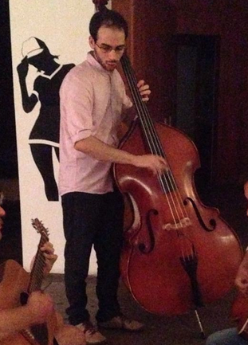

An original Jazz Funk Composition:
Mystery Meat With Pepper:
Mystrey Meat With Pepper
Some Jazz standards:
Trictotrism:
Trictotrism
Autumn in New York:
Autumn in New York
Soundtrack Composistions:
Me and the Machine in Space
contact
(back)